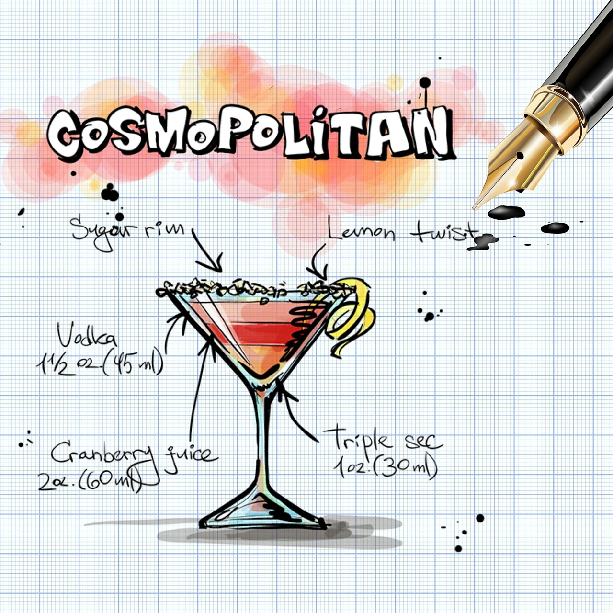

Cosmopolitan

Cocktail that gained popularity during the 1990s from a television
show.-source: allrecipes.com
Ingredients:
- 1 1/2 fluid ounces vodka
- 1/4 fluid ounce lime juice
- 1/4 fluid ounce triple sec
- 1/4 fluid ounce cranberry juice
- 1 cup ice
- 1 lime wedge for garnish
Directions:
-
Combine vodka, lime juice, triple sec, and cranberry juice in a cocktail
shaker.
-
Add ice, cover and shake until chilled. Strain into a chilled cocktail
glass.
- Garnish with a lime wedge.